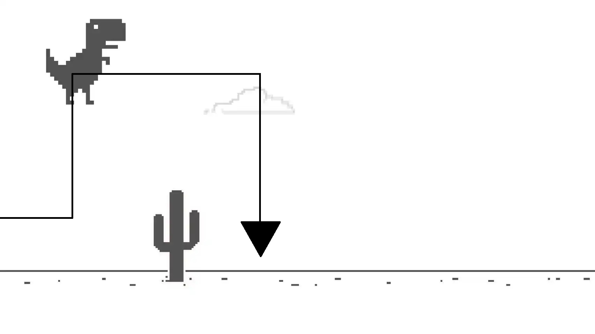
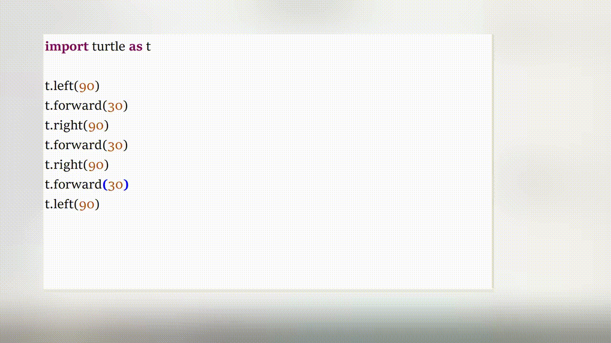
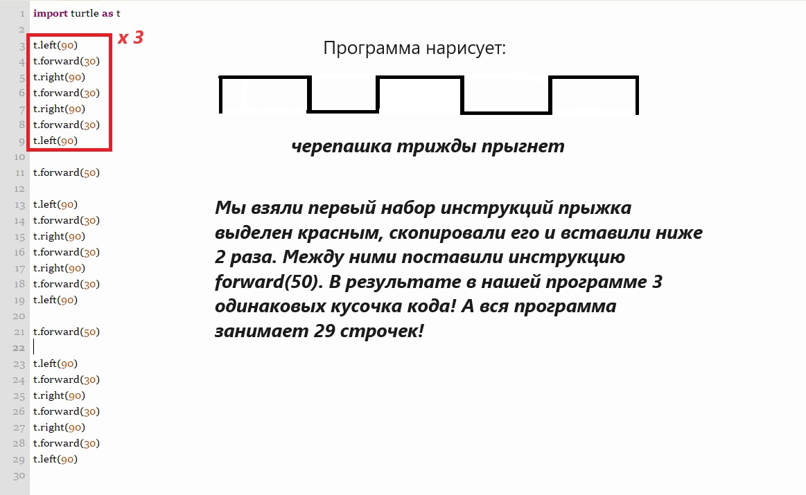
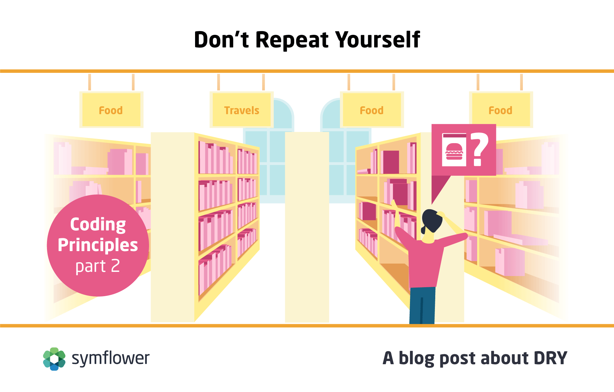
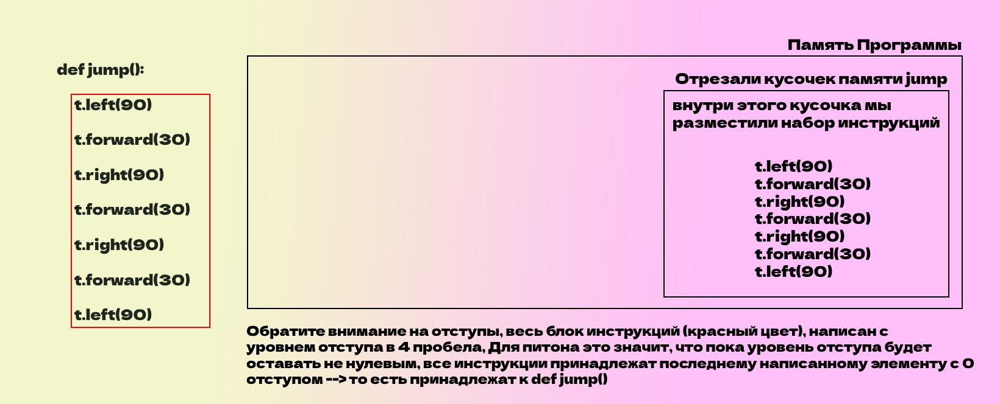
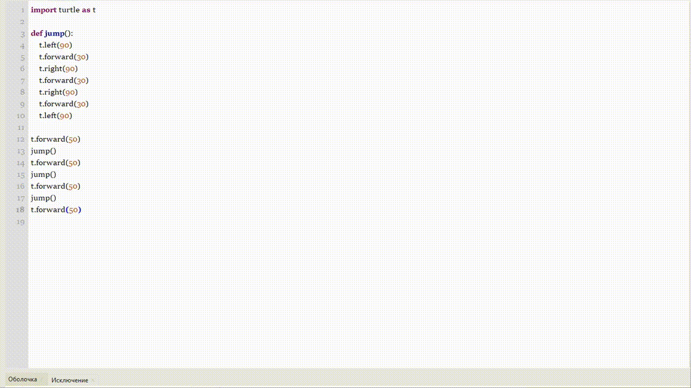
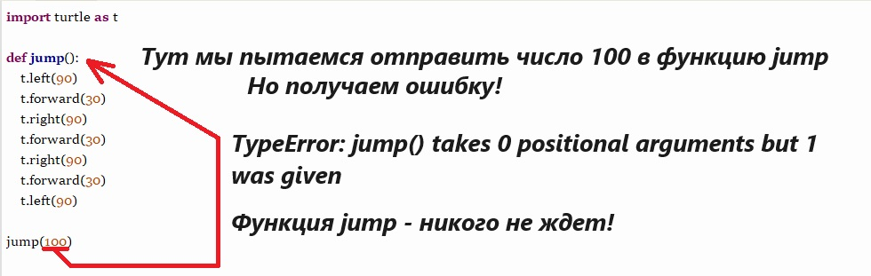
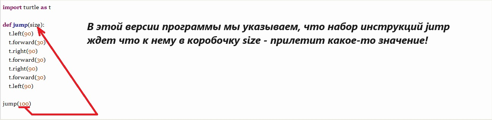
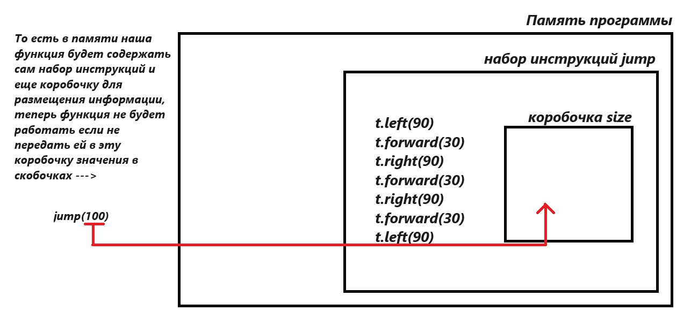
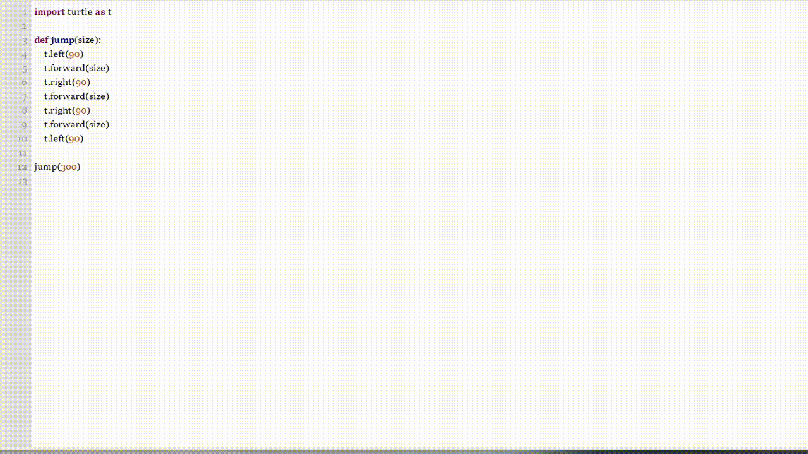

Добро пожаловать в 9 урок!
Привет будущие программисты! Сегодня мы рассмотрим с Вами новую интересную тему - функции. Но все таки --> начнем с повтора того, что нам уже на данный момент известно. Мы на прошлых уроках - вытаскивали шарики из нашей "коробки с языком python". Давайте посмотрим, какие шары нам уже известны.
Нарисованные шарики --> это наши инструменты, которыми, мы овладели на данный момент курса. Очень неплохо, нами проделана большая работа, и мы можем собой гордиться! Вы большой молодец!. Отдохните и позвольте себе что приятное). Как будете готовы, продолжайте)
Но нам с Вами интересен - последний шарик. Тот самый, у которого - знак вопроса. Знакомьтесь, наш следующий шарик - это функция --> def.
Функция - это некий набор инструкций, который, мы можем использовать снова и снова, чтобы выполнить определенную задачу. Понять функцию, не так уж и сложно, отчасти человек пользуется чем то очень-очень похожим. Например, в детстве мы с все с Вами учили язык, путали слова, или даже посещали логопеда. Нам точно было нелегко и мы сильно старались, пытались понять как звучит та или иная буква в составе слова. Получается мы с Вами поняли,
как пользоваться языком, то есть как бы запомнили в своей голове инструкции родного языка. Осознали правила.
Теперь, после запоминания инструкций в нашей памяти, мы можем в своей жизни в любой момент использовать эти инструкциями из памяти. Когда нам нужно заговорить, наш мозг просто воспроизводит эти инструкции, которые мы так старательно учили в детстве. Похожий пример можем привести с менее глобальной функцией - завязывание шнурков. Мы долго и старательно учились, запихивали эти шнурки внутрь кросовка, но (надеюсь), всеже выучили как завязывать шнурки. То есть абсолютно точно также, наш мозг как бы записал в себя инструкции от наших родителей, по завязыванию шнурков. И теперь где бы нам не пришлось завязывать шнурки мы просто воспроизводим, выученный нами ранее набор инструкций.
То есть человек - очень хорошо владеет различными функциями, способен что-то запомнить и выучить, а в последствии всю свою жизнь применять.
Если с реальной жизнью - все понятно. Мы создаем в своей голове некие наборы инструкций (функции), а после можем их в любой подходящий момент воспроизводить, то как обстоят дела с программированием? Нужны ли в программах - функции? Для того, чтобы понять, как нам может помочь функция в программировании, давайте попробуем вспомнить одну из самых популярных компьютерных игр. Динозаврика.
Как видите - Динозаврик довольно много прыгает. Видимо - он хорошо научился это делать в детстве. И создал в своей голове функцию (набор инструкций) - "прыжок". Если движения динозаврика, представить линией - то получится, примерно следующее.

Попробуем нарисовать такую линию нашим модулем Грегола Лингла - "turtle".
Давай те сначала представим прыжок. Можем воспроизвести прыжок динозаврика - следующими командами:
--left(90)
--forward(30)
--right(90)
--forward(30)
--right(90)
--forward(30)
--left(90)
Выглядеть этот кусочек кода будет вот так: ---->

Представим теперь, что динозаврику нужно перепрыгнуть 3 препятствия. Его движения на экране примут такую продолжающуюся линию --->
И теперь придется изменить и программу

Теперь программа занимает аж 27 строк! Что является нашей самой большой программой. И несмотря, на то, что мы могли бы себя похвалить за старания, нам стоит задуматься, не сделали ли мы с Вами случайно лишнюю работу? Настоящий программист - ленивый программист! Программист точно не захочет выполнять лишнюю работу. Поэтому в программистком сообществе - даже придумали правило ---> Не повторяйся.

И теперь - мы можем с Вами связать две части урока. Как поступал человек? Он сначала выучивал инструкции по завязыванию шнурков, сохранял их у себя в голове, а потом пользовался ими всякий раз, когда нужно было завязать шнурки. То есть человек сохранял в своей памяти нужные инструкции. И тогда мы могли бы сказать, что человек приобретал функцию - завязывания шнурков.
Но может ли так сделать программа? Конечно! У нас же есть память, которую мы можем нарезать на разного рода кусочки (побольше и поменьше). Давайте отрежем от памяти довольно большой кусочек. Дадим нашему переводчику такие указания:
def jump(): --->
внутри мы разместим наш набор инструкций прыжка, который мы определили ранее и все вместе получится:
def jump():
t.left(90)
t.forward(30)
t.right(90)
t.forward(30)
t.right(90)
t.forward(30)
t.left(90)

У нас получилось сохранить в памяти некий набор инструкций. И если теперь этот набор инструкций сохранен под именем jump. То есть мы теперь можем пользоваться этим набором инструкций в любом месте программы и столько раз, сколько захотим.
Для того чтобы, вызвать этот набор инструкций нужно просто воспользоваться стандартным способом:
сначала произнести заклинание --> jump
а после добавить взмах волшебной палочкой --> ()
то есть --> jump()

Что мы теперь можем отметить?
Таким образом мы можем с Вами сохранять абсолютно любые кусочки кода, создавая новые функции и применяя их в нашей программе.
Вот пример трех функций. Вы можете скопировать себе в программу эти функции:
def square(): #квадрат
for i in range(4):
t.forward(100)
t.left(90)
def circle(): #круг
for i in range(360):
t.forward(1)
t.left(1)
Вообщем-то можем подвести промежуточный итог, мы можем взять любой набор инструкций, и упаковать его в большую коробочку-переменную (кусок память), а потом в нужный нам момент времени попросить этот набор инструкций исполниться. Нужно только написать имя нашей коробочки-переменной и поставить ().
Если наша коробочка называется jump и в ней находятся инструкции. То мы запустим их командой jump(). Круто!
Но у меня к Вам есть вопрос, не похожи ли случайно наши изученные команды. Сравните:
--> print()
--> jump()
Да! В точку! print() - это тоже функция, то есть набор инструкций, которые мы запускаем. И это приоткрывает нам тайну работы команды, которые мы с Вами уже выучили.
Но остается лишь один неразрешенный вопрос. Когда мы вызываем функцию print() - внутрь скобочек, мы можем что-то передавать. Например внутри можем расположить 1. И это будет сигналом, что вывести нам нужно будет цифру 1.
Может ли наша с Вами функция jump что-то принимать? Ответ - конечно может. Для того, что бы отправить что-то в функцию, нам нужно немного модернизировать наш код.

Для того, что бы указать переводчику, что функция jump кого-то ожидает, нужно еще немного изменить код!

Давайте посмотрим как функция с ожиданием коробочки - будет представлена в памяти

С детства мы все тоже научились прыгать, и нам часто это пригождается в жизни, мы перепрыгиваем препятствия (лужи, грязь). Но для того, чтобы сделать прыжок, нам нужна информация насколько далеко прыгать. Без этой информации человеческий прыжок через лужу, был бы попросту невозможен, так как нельзя было бы рассчитать, насколько сильно нужно отталкиваться при прыжке.
Ту примерно то же самое, некоторым функциям, нужна дополнительная информация, и эту информацию функция может ожидать и размещать в специальных коробочках, которыми потом может воспользоваться. Итоговый вариант нашей функции, мог быть таким.

В этом финальном варианте функции, мы не просто размещаем переданные данные в коробочку функции, но и еще пользуемся этой коробочкой.